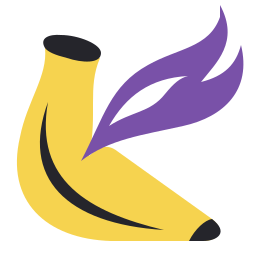

libpotassium is an opinionated C++ wrapper for libsodium.
For a supported libsodium family named crypto_x_*, import potassium.x and use the potassium::x namespace.
For example, crypto_box_* and crypto_secretbox_* map to potassium.box and potassium.secretbox, respectively.
Import potassium for the complete public API.
See the libsodium coverage comparison for support by operation, gaps, and deliberate API differences.
| Libsodium family | libpotassium mapping |
|---|---|
crypto_box_* |
potassium.box supports random and seeded key pairs, direct and precomputed combined and detached encryption, and anonymous sealed boxes with both Box algorithms. |
crypto_sign_* |
potassium.sign provides Ed25519 key operations, signed messages, detached signatures, and multipart Ed25519ph with reusable state. |
crypto_kem_* |
potassium.kem provides X-Wing key generation, encapsulation and decapsulation, with guarded shared secrets. |
crypto_hash_* and crypto_generichash_* |
potassium.hash provides SHA digests and both unkeyed and keyed BLAKE2b under potassium::hash. |
crypto_auth_* |
Use potassium::auth for HMAC tags, one-shot authentication, and verification, and potassium::hash::keyed_hasher<A> for streaming. |
crypto_aead_chacha20poly1305_* and crypto_aead_xchacha20poly1305_ietf_* |
potassium.aead provides combined and detached ChaCha authenticated encryption with associated data. |
crypto_aead_aegis128l_*, crypto_aead_aegis256_* and crypto_aead_aes256gcm_* |
potassium.aead also provides combined and detached AEGIS and AES256-GCM, with reusable AES256-GCM key precomputation. |
crypto_secretstream_xchacha20poly1305_* |
potassium.secretstream provides guarded sender and receiver states for ordered authenticated records. |
Symmetric key generators such as crypto_auth_keygen |
potassium.core generates typed keys through potassium::secret_key<KeyTag>, potassium::key_buffer_storage<KeyTag>, and potassium::make_secret_key<KeyTag>(). |
sodium_init, secure-memory utilities, and random byte generation |
potassium.core exposes shared facilities such as potassium::init, potassium::wipe, and potassium::random_fill directly in potassium. |
Streaming HMAC moved to potassium.hash because it shares storage, finalization, and reset operations with keyed BLAKE2b.
For compatibility with libsodium’s crypto_hash(), select potassium::hash::sha512 explicitly.
potassium::hash::default_algorithm selects 32-byte BLAKE2b.
Use CMake 4.5 or newer, Ninja 1.11 or newer, development files for libsodium 1.0.22 or newer, and a C++26 toolchain whose std module exports std::indirect and whose compiler supports deleted functions with reasons.
The test suite requires Catch2 v3, which is available in the full Nix development shell.
To configure without the test suite, pass -DBUILD_TESTING=OFF.
See HACKING.md for the pinned Nix development shell, toolchain details, and CLion setup.
cmake --preset debug
cmake --build --preset debug
ctest --preset debug
Use release in the same commands for an optimized build in build/release.
Each example builds as potassium_example_<topic> and runs as part of CTest when tests are enabled.
For example, run ./build/debug/potassium_example_init after building.
The caller-owned variants show how to avoid dynamic allocation for keys, cryptographic state, and outputs where the API supports it.
| Topic | Usage variants |
|---|---|
| Init | Library initialization and version information |
| Core | Nonthrowing initialization, guarded and inline keys, random bytes, wiping, guarded allocators and PMR, and locking caller memory |
| AEAD | Combined and detached ciphertext, associated data, generated and explicit nonces, caller buffers, and reusable AES256-GCM precomputation |
| Auth | One-shot HMAC tags, verification, authentication failure, and inline streaming HMAC |
| Box | Random and seeded key pairs, direct and precomputed encryption, anonymous sealed boxes, and caller-owned keys and outputs |
| Hash | One-shot and incremental digests, keyed BLAKE2b, active reset with key replacement, and state reuse after finalization |
| KEM | X-Wing encapsulation and decapsulation with guarded results or reusable caller buffers |
| SecretBox | Combined and detached ciphertext, generated and explicit nonces, caller buffers, and authentication failure |
| Secretstream | Record streams, rekeying, final record verification, and reuse of guarded state, caller-owned state, and record buffers |
| Sign | Signed messages, detached signatures, key extraction, and Ed25519ph with reusable guarded or inline state |
With Doxygen installed, enable and build the HTML documentation with the following commands.
cmake --preset docs
cmake --build --preset docs
Open build/docs/docs/html/index.html to browse the documentation.
The documentation option defaults to OFF.
If enabled while Doxygen is missing, CMake warns and skips the documentation target.
Follow the project rules in AGENTS.md. Enable soft wrapping in your editor so Markdown remains easy to read while keeping one sentence per line for focused diffs.
AI tools are used in developing libpotassium. A human reviews and improves AI-assisted code, and pull requests containing AI-assisted code are accepted only after that manual review and improvement. Each AI-assisted commit must attribute the assistance with a Git trailer in the following format.
Assisted-By: Agent (Provider; underlying model)
libpotassium is licensed under the Boost Software License 1.0.